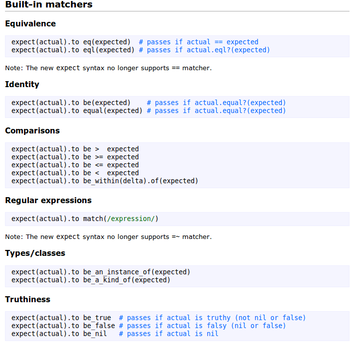
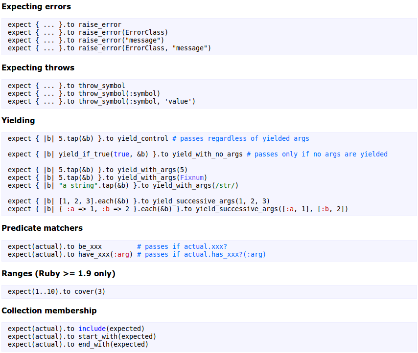
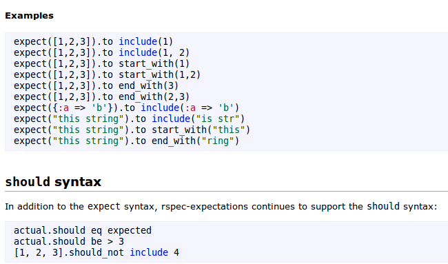

Testing with RSpec
by @edymerchk
Overview
RSpec is testing tool for the Ruby programming language
Overview
- a rich command line program (the rspec command)
- textual descriptions of examples and groups (rspec-core)
- flexible and customizable reporting
- extensible expectation language (rspec-expectations)
- built-in mocking/stubbing framework (rspec-mocks)


With / Without tests
Installation
$ gem install rspec
Initialize
$ rspec --init
create spec/spec_helper.rb
create .rspec
.rspec
command line options
--color
--format documentation
Describe / context / it
Describe
describe Calculator do
describe '#add' do
#...
end
end
Be clear about what method you are describing. For instance, use the Ruby documentation convention of . (or ::) when referring to a class method's name and # when referring to an instance method's name.
Context
describe Order do
context "with no items" do
#...
end
end
context "with one item" do
#...
end
end
Contexts are a powerful method to make your tests clear and well organized. In the long term this practice will keep tests easy to read.
it
describe "something" do
context "in one context" do
it "does one thing" do
end
end
context "in another context" do
it "does another thing" do
end
end
end
A example description should never be longer than 40 characters. If this happens you should split it using a context.
Expectations
RSpec::Expectations lets you express expected outcomes on an object in an example.
expect(actual).to matcher(expected)
expect(actual).not_to matcher(expected)
it 'returns the sum of its arguments' do
expect(Calculator.new.add(1, 2)).to eq(3)
end
Matchers
Matchers
Examples
Rails Installation
group :development, :test do
gem "rspec-rails"
gem "factory_girl_rails"
end
group :test do
gem "database_cleaner"
gem "faker"
end
run rspec generator
$ rails g rspec:install
create spec/spec_helper.rb
create .rspec
config rails generator
config/application.rb
config.generators do |g|
g.test_framework :rspec,
fixtures: true,
view_specs: false,
helper_specs: false,
routing_specs: false,
controller_specs: true,
request_specs: true
g.fixture_replacement :factory_girl, dir: "spec/factories"
end
db config
$ vim config/database.yml
$ rake db:test:prepare
additional rspec config
$ vim spec/spec_helper.rb
Model specs
Model specs
- The default factory should generate a valid object (more on factories in just a moment)
- Data that fail validations should not be valid.
- Class and instance methods perform as expected.
Location location location!
The name and location for your spec file is important!
RSpec’s file structure mirrors that of the app directory, as do the files within it. In the case of model specs, contact_spec.rb should correspond to contact.rb.
Structure
spec/models/contact_spec.rb
require 'spec_helper'
describe Contact do
it "has a valid factory"
it "is invalid without a firstname"
it "is invalid without a lastname"
it "returns a contact's full name as a string"
end
Factories
factory_girl is a fixtures replacement with a straightforward definition syntax, support for multiple build strategies (saved instances, unsaved instances, attribute hashes, and stubbed objects), and support for multiple factories for the same class (user, admin_user, and so on), including factory inheritance.
spec/factories/contacts.rb
FactoryGirl.define do
factory :contact do
firstname "John"
lastname "Doe"
sequence(:email) { |n| "johndoe#{n}@example.com"}
end
end
describe Contact do
it "has a valid factory" do
FactoryGirl.create(:contact).should be_valid
end
it "is invalid without a firstname" do
FactoryGirl.build(:contact, firstname: nil).should_not be_valid
end
it "is invalid without a lastname" do
FactoryGirl.build(:contact, lastname: nil).should_not be_valid
end
it "returns a contact's full name as a string" do
FactoryGirl.create(:contact,
firstname: "John",
lastname: "Doe").name.should eq "John Doe"
end
end
Faker
spec/factories/contacts.rb
require 'faker'
FactoryGirl.define do
factory :contact do
firstname { Faker::Name.first_name }
lastname { Faker::Name.last_name }
email { Faker::Internet.email }
end
end
Advanced associations
FactoryGirl.define do
factory :contact do
firstname { Faker::Name.first_name }
lastname { Faker::Name.last_name }
email { Faker::Internet.email }
after_build do |contact|
[:home_phone, :work_phone, :mobile_phone].each do |phone|
contact.phones << FactoryGirl.build(phone, contact: contact)
end
end
end
end
it "has three phone numbers" do
create(:contact).phones.count.should eq 3
end
before - after - let - subject
before and after hooks
As a developer using RSpec I want to execute arbitrary code before and after each example So that I can control the environment in which it is run
before(:each) blocks are run before each example before(:all) blocks are run once before all of the examples in a group
after(:each) blocks are run after each example after(:all) blocks are run once after all of the examples in a group
describe Thing do
before(:each) do
@thing = FactoryGirl.create(:thing)
end
describe "initialized in before(:each)" do
it "has 0 widgets" do
@thing.should have(0).widgets
end
it "can get accept new widgets" do
@thing.widgets << Object.new
end
end
after(:all) do
puts "after all ran"
end
end
Use let and let!
When you have to assign a variable instead of using a before block to create an instance variable, use let. Using let the variable lazy loads only when it is used the first time in the test and get cached until that specific test is finished. A really good and deep description of what let can be found in this stackoverflow answer
describe '#type_id' do
let(:resource) { FactoryGirl.create :device }
let(:type) { Type.find resource.type_id }
it 'sets the type_id field' do
expect(resource.type_id).to == type.id
end
end
Use let! if you want to define the variable when the block is defined. This can be useful to populate your database to test queries or scopes.
Use subject
If you have several tests related to the same subject use subject{} to DRY them up.
subject { Hero.first }
it "carries a sword" do
expect(subject.equipment).to include "sword"
end
.
.
.
Controller specs
A controller spec is broken down by controller method–each example is based off of a single action and, optionally, any params passed to it.
it "redirects to the home page upon save" do
post :create, message: FactoryGirl.attributes_for(:message)
expect(response).to redirect_to root_url
end
A factory generates test data to pass to the controller method; note the use of Factory Girl’s attributes_for option, which generates a hash of values as opposed to a Ruby object.
Get requests
index
describe'GET#index'do
it "populates an array of messages" do
message = create(:message)
get :index
expect(assigns(:messages)).to match_array [message]
end
it "renders the :index view" do
get :index
expect(response).to render_template :index
end
end
Get requests
show
describe'GET#show'do
it "assigns the requested message to @message" do
message = create(:message)
get :show, id: message
expect(assigns(:message)).to eq message
end
it "renders the :show template" do
message = create(:message)
get :show, id: message
expect(response).to render_template :show
end
end
Get requests
new
describe'GET#new'do
it "assigns a new Message to @message" do
get :new
expect(assigns(:message)).to be_a_new(Message) end
it "renders the :new template" do get :new
expect(response).to render_template :new
end
end
Get requests
edit
describe'GET#edit'do
it "assigns the requested message to @message" do
message = create(:message)
get :edit, id: message
expect(assigns(:message)).to eq message
end
it "renders the :edit template" do
message = create(:message)
get :edit, id: message expect(response).to render_template :edit
end
end
Post requests
it "does something upon post#create" do
post :create, message: attributes_for(:message)
end
One key difference from the GET methods: Instead of the :id we passed to the GET methods, we need to pass the equivalent of params[:message]
Post requests
create
describe"POST#create"do
context "with valid attributes" do
it "saves the new message in the database" do expect{
post :create, message: attributes_for(:message)
}.to change(Message, :count).by(1)
end
it "redirects to the home page" do
post :create, message: attributes_for(:message)
expect(response).to redirect_to root_url
end
end
end
Post requests
create
describe"POST#create"do
context "with invalid attributes" do
it "does not save the new message in the database" do
expect{
post :create,
message: attributes_for(:invalid_message)
}.to_not change(Message, :count)
end
it "re-renders the :new template" do post :create,
message: attributes_for(:invalid_message)
expect(response).to render_template :new
end
end
end
:invalid_message ?? WTF ?
factory inheritance
FactoryGirl.define do
factory :message do
name { Faker::Name.name }
email { Faker::Internet.email }
message { Faker::Lorem.paragraph }
factory :invalid_message do
email nil
end
end
end
put requests
update
describe'PUT#update'do
let(:message) {create(:message, firstname: "Byron Builes", email: "Byron@builes.com")}
context "valid attributes" do
it "changes message's attributes" do
put :update, id: message,
message: attributes_for(:message, firstname: "B. Builes")
message.reload
expect(message.name).to eq("B. Builes") end
end
end
delete requests
destroy
describe'DELETE#destroy'do
before :each do
@message = create(:message)
end
it "deletes the message" do
expect{
delete :destroy, id: @message
}.to change(Message,:count).by(-1)
end
end
non-CRUD methods
describe'POST#flag'do
let(:message) {create(:message) }
it "marks the message as inappropriate" do
put :flag, id: message
expect(message.reload.is_inappropriate?).to be_true
end
end
routes specs
it "routes to #index" do
get("/articles").should route_to("articles#index")
end
it "routes to #show" do
get("/books/1").should route_to("books#show", :id => "1")
end
non-HTML controller output
def index
@messages = Message.all
respond_to do |format|
format.html # index.html.erb
format.csv do
send_data Message.to_csv(@messages),
type: 'text/csv; charset=iso-8859-1; header=present',
:disposition => 'attachment; filename=messages.csv'
end
end
end
describe'CSVoutput'do
it "returns a CSV file" do
get :index, format: :csv
expect(response.headers['Content-Type']).to have_content 'text/csv'
end
it 'returns content' do
create(:message,
name: 'Aaron',
email: 'aaron@sample.com',
message: 'Testing!')
get :index, format: :csv
expect(response.body).to have_content 'Aaron,aaron@sample.com,Testing!'
end
end
The have_content matcher shown here comes from Capybara
it "returns JSON-formattedcontent"do
message = create(:message)
get :index, format: :json
expect(response.body).to have_content message.to_json
end
The have_content matcher shown here comes from Capybara
more?
pending
describe "an example" do
it "is a pending example"
it "returns the baloto's winner combination" do
pending
end
end
tags
describe "group with tagged specs" do
it "example I'm working now", :focus => true do; end
it "special example with string", :type => 'special' do; end
it "special example with symbol", :type => :special do; end
it "slow example", :skip => true do; end
it "ordinary example", :speed => 'slow' do; end
it "untagged example" do; end
end
rspec . --tag focus
rspec . --tag type:special
rspec . --tag ~speed:slow
rspec . --tag ~skip --tag ~speed:slow
devise
Put the following inside a file named spec/support/devise.rb:
RSpec.configure do |config|
config.include Devise::TestHelpers, :type => :controller
end
sign_in @user # sign_in(resource)
sign_out @user # sign_out(resource)
cancan
If you are testing the Ability class through RSpec there is a be_able_to matcher available. This checks if the can? method returns true
require "cancan/matchers"
# ...
ability.should be_able_to(:destroy, Project.new(:user => user))
ability.should_not be_able_to(:destroy, Project.new)
Pro way
require "cancan/matchers"
# ...
describe "User" do
describe "abilities" do
subject(:ability){ Ability.new(user) }
let(:user){ nil }
context "when is an account manager" do
let(:user){ Factory(:accounts_manager) }
it{ should be_able_to(:manage, Account.new) }
end
end
end
custom matchers
RSpec::Matchers.define :be_a_multiple_of do |expected|
match do |actual|
actual % expected == 0
end
end
9.should be_a_multiple_of(3)
custom formatters
Email spec
A collection of matchers for RSpec/MiniTest and Cucumber steps to make testing emails go smoothly.
This library works with ActionMailer and Pony. When using it with ActionMailer it works with DelayedJob, ActiveRecord Mailer, and action_mailer_cache_delivery.
email-specDatabase Cleaner
Database Cleaner is a set of strategies for cleaning your database in Ruby.
database_cleanerGuard
Guard is a command line tool to easily handle events on file system modifications.
guard-rspecRSpec guard allows to automatically & intelligently launch specs when files are modified.
VCR
Record your test suite's HTTP interactions and replay them during future test runs for fast, deterministic, accurate tests.
VCRSpork
Spork improves the loading time of your test suite by starting up your Rails application once in the background. Use it with Guard for the ultimate combo in fast feedback while doing TDD.
spork guard-sporknext?
- Mock and Stub
- Guard-spork
- behave_like ..
- best practices rspec
- Features with rspec (BDD)
- Best practices rspec
- Macros
- Mock Frameworks
- Helper Specs